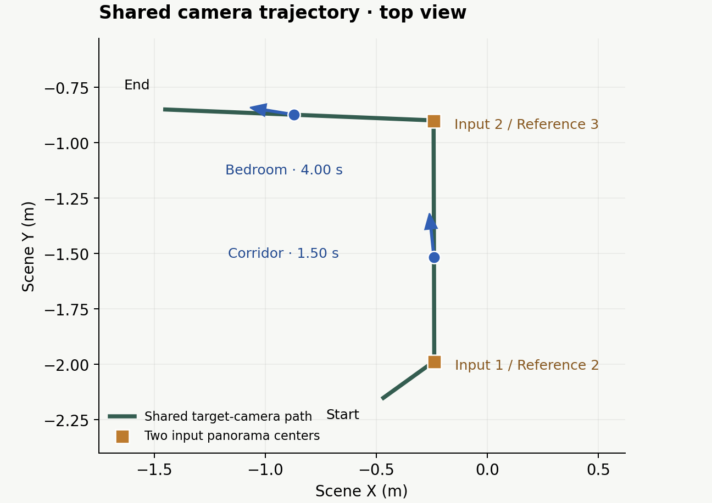

SUPPLEMENTARY MATERIAL · ANONYMOUS REVIEW
Cross-room frame comparisons
Ours and PanoSplatt3R at corresponding target views along the corridor-to-bedroom trajectory in Collection 02.
FRAME 45 · 1.50 SECONDS
Corridor and doorway structure
Both views show the corridor at the same target-camera pose. Compare the door frames and ceiling contours: PanoSplatt3R retains the room layout, with softer and locally wavy edges, while our output preserves clearer boundaries.


FRAME 120 · 4.00 SECONDS
Bedroom layout and object boundaries
After the camera enters the bedroom, compare the window frame, bed outline, and wall–floor boundaries. The PanoSplatt3R result shows softened detail and uneven contours; these structures remain more clearly defined in our output.


Inputs and target-camera positions
The two input panoramas are 1.086 m apart. The shared 2.58 m trajectory passes through the corridor and continues into the bedroom. The two highlighted target views are at locations distinct from both inputs. Arrows indicate viewing directions in this top view.

Comparison protocol
Collection 02 uses a shared target-camera trajectory, a 512 × 512 image resolution, and a 90° field of view. The two rows show corresponding frames at 1.50 s and 4.00 s of the 30 fps videos. Click any image to inspect the full-resolution frame.
| Method | Input setting | Displayed output |
|---|---|---|
| Ours | Broader scene observations and real reference views | Restored novel-view sequence |
| PanoSplatt3R | Two overlapping, complete equirectangular panoramas along the route | Rendering of the predicted Gaussian representation |
PanoSplatt3R setup. We use the released checkpoint in its native two-panorama configuration with Reference 2 and Reference 3, two overlapping original panoramas with a camera baseline of 1.086 m. The prediction remains in its native first-camera coordinate frame; known input-camera poses provide the frame alignment and metric scale following the model’s scale-recovery protocol. Target images are not used to fit the Gaussians or camera alignment.
All 156 target cameras are shared with Collection 02. Our method uses broader scene observations and reference views, so input coverage and training conditions differ. The gallery also compares the restored outputs of DiFix, ArtiFixer, GSFixer, and PanoWorld along this route.
Frame numbers are zero-based. Full frames are shown; the comparison layout does not crop or retouch image content.